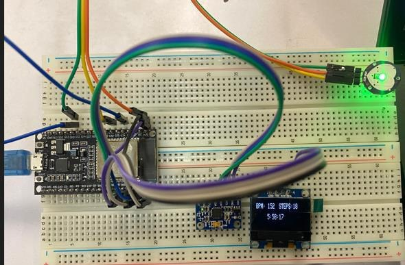
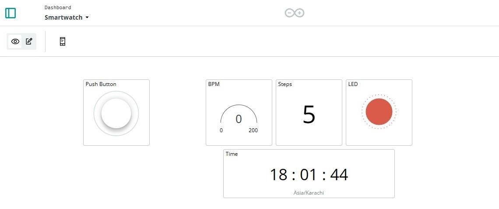

FreeRTOS Smartwatch on ESP32 with Arduino Cloud
Code & ReportOpen-Ended Lab Hardware Prototype Dec 2023
A working smartwatch prototype built on real hardware. An ESP32 running FreeRTOS shows the time, heart rate and step count on an OLED, measures heart rate with a pulse sensor and counts steps with an MPU6050 accelerometer. It also streams everything to an Arduino IoT Cloud dashboard for remote monitoring.
Features
- Real-time clock synchronised over WiFi with NTP.
- Heart rate (BPM) from a pulse sensor, updated every 15 s.
- Step counting from the accelerometer.
- Power saving: the display wakes on a button press and turns off automatically after 30 s of inactivity.
- Cloud dashboard showing BPM, steps, time and LED state, plus a cloud switch that wakes the display remotely.

1) Hardware
| Component | Interface | Role |
|---|---|---|
| ESP32 (DOIT DevKit V1) | Dual-core, WiFi | Runs FreeRTOS, the sensor tasks and the cloud connection |
| SSD1306 OLED, 128×32 | I²C (0x3C) | Shows BPM, steps and time |
| MPU6050 accelerometer / gyro | I²C (shared bus) | Step detection |
| Pulse (heart-rate) sensor | Digital input, GPIO32 | Counts heartbeats |
| Push button | GPIO34, falling-edge interrupt | Wakes the display |
2) FreeRTOS Architecture
Each function runs as its own task, pinned to one of the ESP32's two cores. Sensor and time tasks run on core 0. The display and cloud task runs on core 1 at a lower priority, so the sensors are never starved.
| Task | Core | Priority | Period | Job |
|---|---|---|---|---|
| BPM | 0 | 2 | 200 ms | Samples the pulse sensor and publishes BPM every 15 s |
| Time (NTP) | 0 | 2 | 200 ms | Reads the synchronised local time and publishes h:m:s |
| Blink | 0 | 2 | 700 ms | Heartbeat LED (mirrored to the cloud) |
| Step | 1 | 2 | 200 ms | Reads the MPU6050 and counts steps |
| Display | 1 | 1 | 20 ms | Updates the OLED and syncs the cloud variables (16 KB stack) |
Inter-task communication
- Four single-item queues (time, BPM, steps, screen state) are grouped in a queue set. The display task uses
xQueueSelectFromSetto pick up whichever value changed, so it never polls each producer. - An I²C mutex protects the shared bus, so the OLED and the MPU6050 are never accessed at the same time by different tasks.
Display power management
- The button ISR (or the cloud switch) starts or resets a 30 s one-shot software timer and sends "screen on" to the display task.
- When the timer expires, its callback sends "screen off" and the display task blanks the OLED.
3) Measurement Logic
4) Arduino IoT Cloud Integration
The ESP32 connects to Arduino IoT Cloud with the ArduinoIoTCloud library. The display task updates the
cloud variables and calls ArduinoCloud.update() on every cycle:
- bPM (CloudHeartRate), steps (int) and lED (CloudLight): read-only, sent on change.
- rTC (CloudTime): pushed every second.
- _switch_ (bool, read/write): toggling it on the dashboard runs
onSwitchChange(), which wakes the display remotely.

5) Outcome
The prototype met all its objectives: concurrent real-time tasks on FreeRTOS, reliable sharing of the I²C bus, a power-saving display, and live remote monitoring through the cloud. A natural next step for a wearable that handles health data is stronger security for the data sent to the cloud.